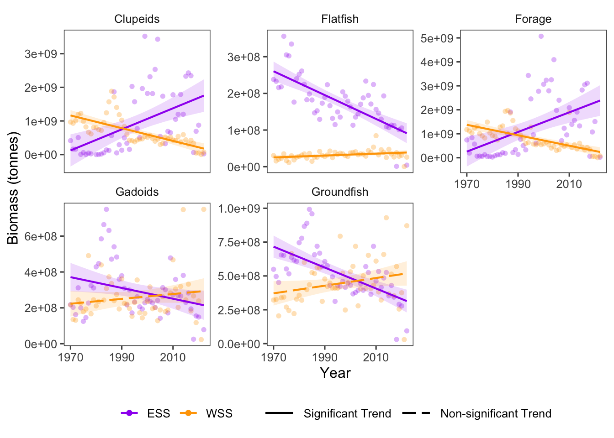

21 Resource Potential: Fished Groups
Data Type: Tabular Data (within eco_indicators)
Spatial Scope: Maritimes
Duration 1970-2022
Source: Bundy et al. 2017
21.1 Introduction to Indicator
Resource potential describes the total production capacity of the community, which can be further separated into resource potential of target groups. Harvesting removes resources from a community without replacement, and diminishes the community’s ability to replenish resources to previous levels. Thus, resource potential of fished groups can be used as an indicator of the effect of fishing on the community (Bundy, Gomez, and Cook 2017).
Resource potential of fished groups is quantified by the biomass of harvested species, quantified from fisheries-independent surveys. Here, resource potential is quantified from biomass with focus on five harvested groups:
- Clupeids
- Forage Fish
- Gadoids
- Flatfish
- Groundfish
21.2 View Data
library(tidyr)
library(plotly)
library(stringr)
plotly_df <- data@data %>% inner_join(global_cols2)
# function to create plot with dropdown menu ------------------------------
make_biomassFG_dropdown_plot <- function(df,
year_col = "year",
region_col = "region",
value_suffix = "_value") {
# convert to long format
long <- df %>%
janitor::clean_names() %>%
pivot_longer(
cols = ends_with(value_suffix),
names_to = "metric",
values_to = "value"
) %>%
# remove suffix
mutate(
metric = str_remove(metric, "_value")
) %>%
# drop NAs (some regions don't have data for some variables or years)
tidyr::drop_na(value)
# find all metrics and regions
metrics <- unique(long$metric)
regions <- unique(long[[region_col]])
# clean names for dropdown panels, helper
pretty_label <- function(x) str_to_title(gsub("_", " ", x)) %>% gsub("Lb","Large B",.) %>% gsub("Mb","Medium B",.)
# build plot -----------------
p <- plot_ly()
# Add bar traces: metric1 has region1..K, metric2 has region1..K, ...
for (metric_i in seq_along(metrics)) {
m <- metrics[metric_i]
for (region_i in regions) {
dat <- long %>%
filter(metric == m, .data[[region_col]] == region_i) %>%
group_by(.data[[year_col]],color, region_group, region_group_label) %>% # in case you have multiple rows per year
summarise(value = sum(value), .groups = "drop") %>%
arrange(.data[[year_col]])
group_name <- unique(dat$region_group)
color <- unique(dat$color)
# If a region truly has no data for that metric, add an empty trace
# (keeps trace indexing stable)
if (nrow(dat) == 0) {
dat <- tibble::tibble(!!year_col := integer(0), value = numeric(0))
}
p <- p %>% add_bars(
data = dat,
x = ~.data[[year_col]],
y = ~value,
name = as.character(region_i),
legendgroup = group_name,
legendgrouptitle = list(
text = ifelse(group_name == "ESS",
"Eastern Scotian Shelf Zones",
"Western Scotian Shelf Zones"
)),
showlegend = (metric_i == 1),
visible = (metric_i == 1),
marker = list(color = color),
hovertemplate = paste0("<b>", region_i,":</b> ","%{y:,.2s}<extra></extra>") )
}
}
n_regions <- length(regions)
n_traces <- length(metrics) * n_regions
buttons <- lapply(seq_along(metrics), function(metric_i) {
vis <- rep(FALSE, n_traces)
shl <- rep(FALSE, n_traces)
idx_start <- (metric_i - 1) * n_regions + 1
idx_end <- metric_i * n_regions
vis[idx_start:idx_end] <- TRUE
shl[idx_start:idx_end] <- TRUE
list(
method = "update",
args = list(
list(visible = vis, showlegend = shl),
list(
title = pretty_label(metrics[metric_i]),
yaxis = list(title = "Biomass (tonnes)")
)
),
label = pretty_label(metrics[metric_i])
)
})
p %>%
layout(
barmode = "stack",
hovermode = "x unified",
title = pretty_label(metrics[1]),
xaxis = list(title = str_to_title(year_col), type = "category"), # keep one bar per year
yaxis = list(title = "Biomass (tonnes)", fixedrange = TRUE),
legend = list(
x = 1.02, xanchor = "left",
y = 1, yanchor = "top",
groupclick = "toggleitem",
itemdoubleclick = FALSE
),
updatemenus = list(list(
type = "dropdown",
x = 0, xanchor = "left",
y = 1.15, yanchor = "top",
buttons = buttons
)),
margin = list(r = 180, t = 80)
)
}
# usage:
p <- make_biomassFG_dropdown_plot(plotly_df)
p <- p %>% config(displayModeBar= F)
pFigure 21.1: Biomass of Fished Groups in Scotian Shelf regions; 1970-2022. Use dropdown box to select a target taxonomic or functional group, and click legend to isolate regions.
21.3 Trends
Resource potential of fished groups has changed different in the Scotian Shelf between target groups and regions (Fig. 21.1).
In the Eastern Scotian Shelf, resource potential of fished groups (biomass) decreased for 3 groups (3 significant trends) and increased for 2 groups (2 significant) In the Western Scotian Shelf, 2 groups had decreasing trends (2 significant), and 3 groups increased (1 significant) over time (Fig. 21.2).
The strongest biomass decrease was observed in the Forage group in the WSS region, and the strongest increase was in the Forage in the ESS region (Fig. 21.2).

Figure 21.2: Overall Biomass trends for taxonomic and functional groups overtime.
21.3.1 Summary Table by Region and Functional Group
Trends in Biomass over time for each guild and each NAFO region within the Eastern and Western Scotian Shelf (1970-2022) are shown in the table below (Table 21.1).
| taxon | Eastern Scotian Shelf Biomass Trends (tonnes/year) | Western Scotian Shelf Biomass Trends (tonnes/year) |
|---|---|---|
| Clupeids |
4VN: -1.00e+06 4W: 2.60e+07 ∗ |
4X: -1.89e+07 ∗ |
| Flatfish |
4VN: 3.37e+04 4VS: -1.18e+06 ∗ 4W: -1.54e+06 ∗ |
4X: 2.59e+05 ∗ |
| Forage |
4VN: -4.67e+04 4VS: 1.53e+07 ∗ 4W: 2.59e+07 ∗ |
4X: -2.18e+07 ∗ |
| Gadoids |
4VN: -2.34e+05 4VS: -6.72e+05 4W: -1.18e+06 |
4X: 1.36e+06 |
| Groundfish |
4VN: -4.03e+03 4VS: -2.42e+06 ∗ 4W: -3.18e+06 ∗ |
4X: 2.83e+06 |
21.4 Relevance to Research and Stock Assessments
Changes in resource potential for for fished groups may indicate the effects of harvesting, harvest management, and ecological factors, but can also indicate the future potential of fisheries. In Atlantic Canada, resource potential metrics are heterogenous between regions and taxa, and can be useful indicators of change at the local scale (Irvine, Pedersen, and Bundy 2025).
21.5 Variable Definitions
| variable | description | unit |
|---|---|---|
| year | Year of data collection | |
| region | Region over which data are summarized | |
| biomass_{GROUP}_value | Biomass of select fished groups within regions | tonnes |